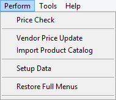
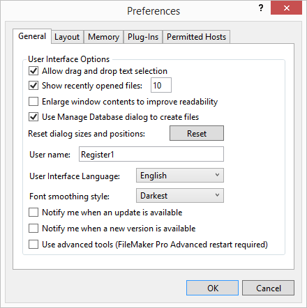
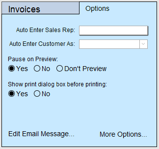
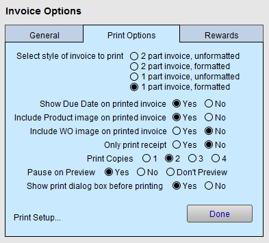

Set up Receipt Printer for Multi User
Use this section to setup a receipt printer in a multi user environment (more than one FrameReady computer).
Important: The Print Receipt icon is designed to only print to a receipt printer. The layout is not formatted for use on Letter (8.5 x 11) paper.
How to Setup Your Receipt Printer for Multi User
-
Open FrameReady with the level4 password.
-
On the Main Menu, in the Menu Bar, click Perform and select Restore Full Menus.

-
Caution: You now have access to FileMaker controls.
User Name Set Up
-
In the menu bar, click Edit and choose Preferences. (Mac: click FileMaker Pro Advanced and choose Preferences...)
-
The Preferences window opens.

-
Take note of the field User Name.
It should be Register1 or Register2 or Register3 . -
If it isn’t so named, then rename it accordingly.
A properly formed user name identifies the computer and the corresponding receipt printer on the network. -
Click OK to close the window.
-
When you next start FrameReady, the Account Name field displays the new User Name. Simply backspace this out and continue with level1 or level2 etc.
Receipt Printer Set Up
-
On the Main Menu, in the Invoices section, open the Options tab.

-
Click the More Options... button.
-
Open the Print Options tab.

-
Make sure that Default to Receipt Printer is set to Yes.
-
Click Done.
Script Set Up
-
Click Menu Bar > Perform and select Restore Full Menus (if there is no Perform menu, then full menus have already been restored).
-
Click on the Invoices button to go to the Invoice File.
-
Click the Menu Bar > Script and select Script Workspace.
The Script Workspace window appears. -
In the left pane, scroll down for the entry that says Print Receipt, select the line (note: Do not tick the check box) and click the Edit button.
The Print Receipt script/code appears in the right pane. -
In the right-hand pane, double-click on the 7th line that says, Print Setup (on Mac: Page Setup).
The Printer Setup window appears.-
Select your receipt printer in the printer drop down menu (if you do not see your receipt printer then you need to install the appropriate print driver before proceeding).
-
Select the correct paper size for the printer (usually 72mm x Receipt).
-
-
Click OK.
-
Back in the Edit Script window, look for the line that ends with the user name of the computer you are configuring. The line may look like this:
-
Else If [Get ( UserName ) = “Register1”]
-
Double-click the Print[Restore...] step that is directly below the line.
A print dialog box appears. -
In the Print dialog box, select the receipt printer that is connected to the computer. You can also adjust the number of copies to be printed, if you need more than one.
-
Click OK to close the Print dialog box.
-
-
Close the Edit Script window. If prompted, Save changes.
-
Close the Manage Scripts window.
Perform a Test Print
-
Run a test print by clicking on the Invoice Printer icon. If the test is okay, return to the Main Menu, and exit FrameReady. Then re-open with the appropriate user name and password.
If the print test fails, then follow the steps again or call tech support. -
Repeat for each computer that has a receipt printer attached to it.
A Note on Cash Drawers
-
The operation of a cash drawer is triggered by the receipt printer and is not accessible from within FrameReady.
-
If your cash drawer experiences technical problems, please consult the manufacturer for instructions.
© 2023 Adatasol, Inc.